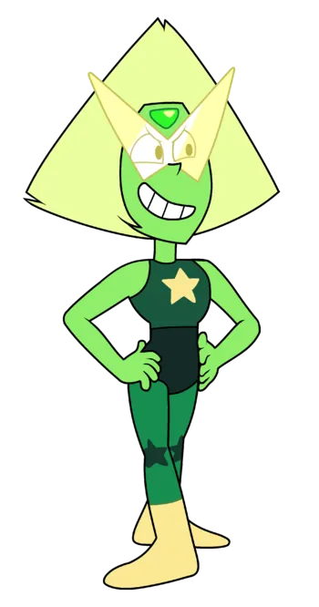

Peridot
Peridot foi mandada á terra junto com Jasper pela diamanate amarelo, sua missão era fazer a drusa eclodir e destruir o planeta que uma vez foi a colônia da diamante rosa. Steven a fez mudar de ideia mostrando que a vida na terra era importante e preciosa.